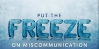
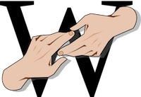
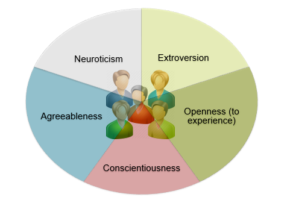
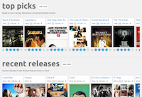
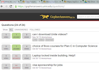
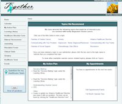
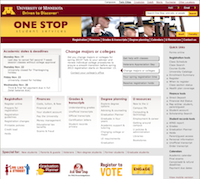
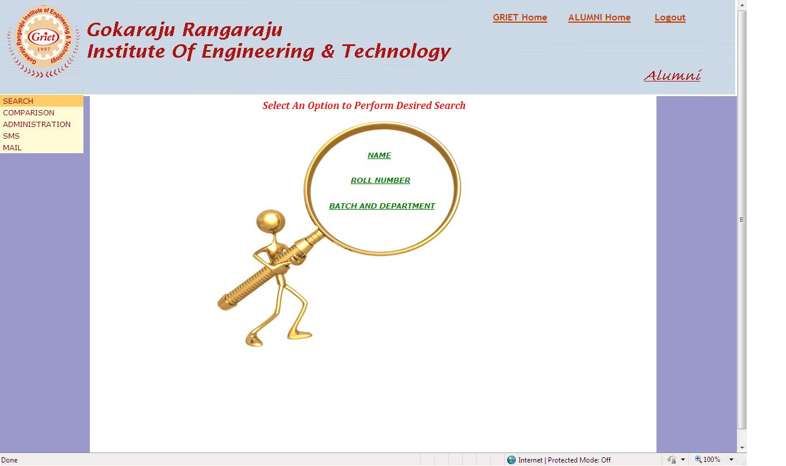

Thank you for your interest in my UX portfolio! My qualitative and quantitative UX work experiences have been documented in the links below each of these projects. For quantitative experience, the link points to the published paper, whereas the qualitative work has been documented in a google doc.
Mistranslations in Science Media Production |
Prior Experience and Newcomer Behavior |
 Qualitative: Open Coding/ Grounded Theory Method |
 Quantitative: Negative Binomial Regression, Poisson Regression, Mixed effects model |
Personality and Newcomer Behavior |
Early Activity and Newcomer Behavior |
 Quantitative: ANOVA, t-test, Wilcoxon Mann-Whitney test, Logistic Regression, Negative Binomial Regression, Multinomial Regression, Mixed effects model |
 Qualitative : Card Sorting |
GopherAnswers: A Q&A service |
Together: A Cancer Portal |
 Qualitative: Personas, Scenarios, Usability testing |
 Qualitative: Lo-fi prototypes, Hi-fi prototypes, Personas, Scenarios, Usability testing |
Student Portal |
College Automation Project |
 Qualitative: Surveys, Prototypes, Heuristic Evaluations, Personas, Scenarios, Usability testing |
 Qualitative:Prototyping (hi-fi, lo-fi), Personas, Scenarios, Usability testing |